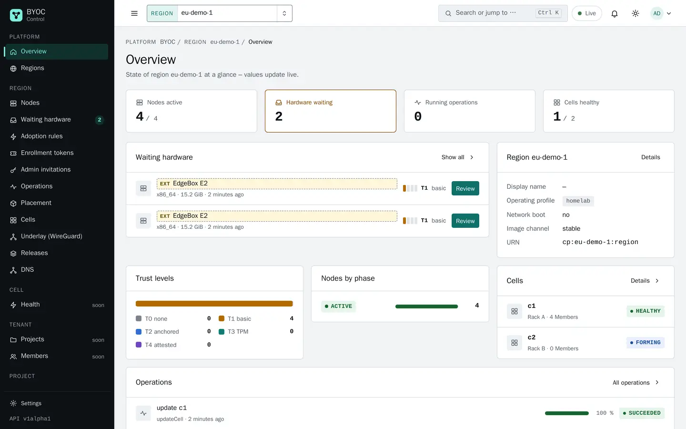
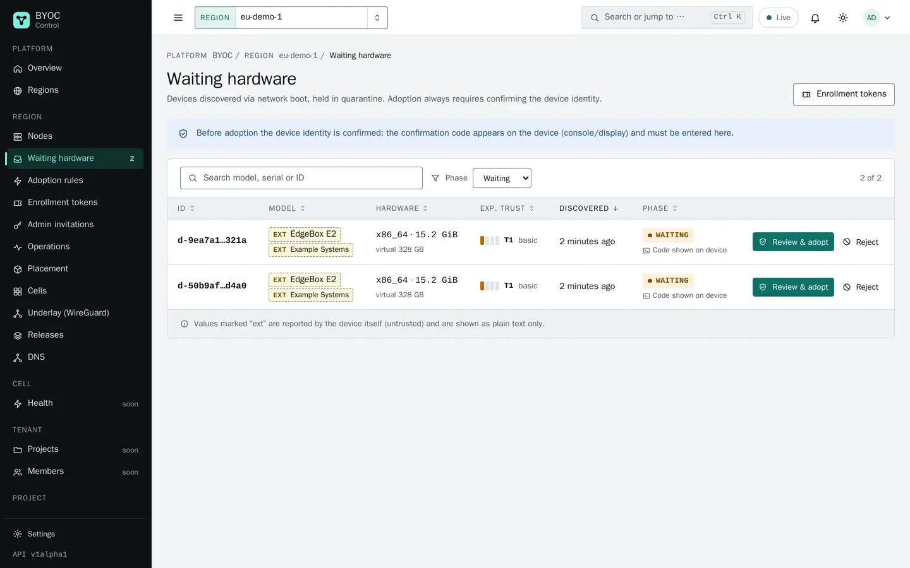
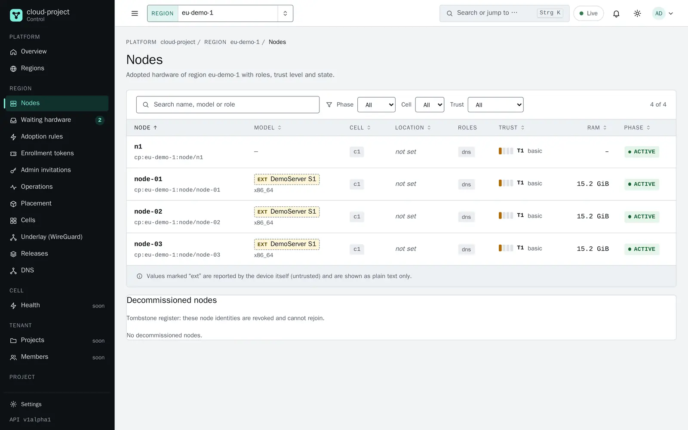
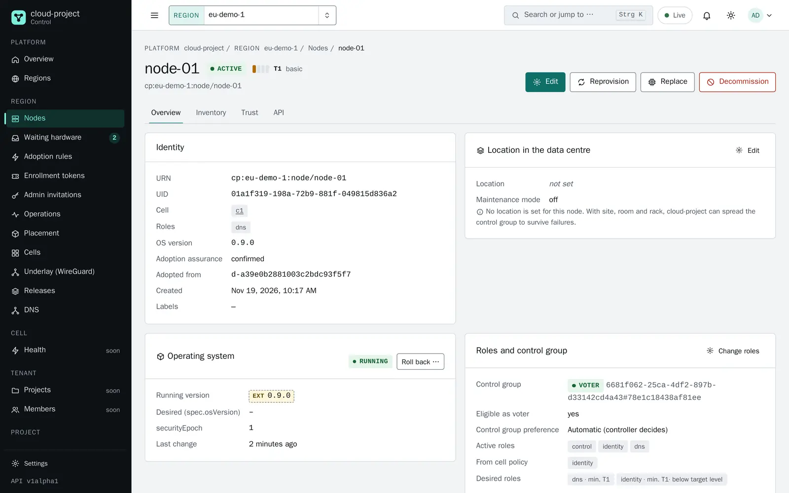
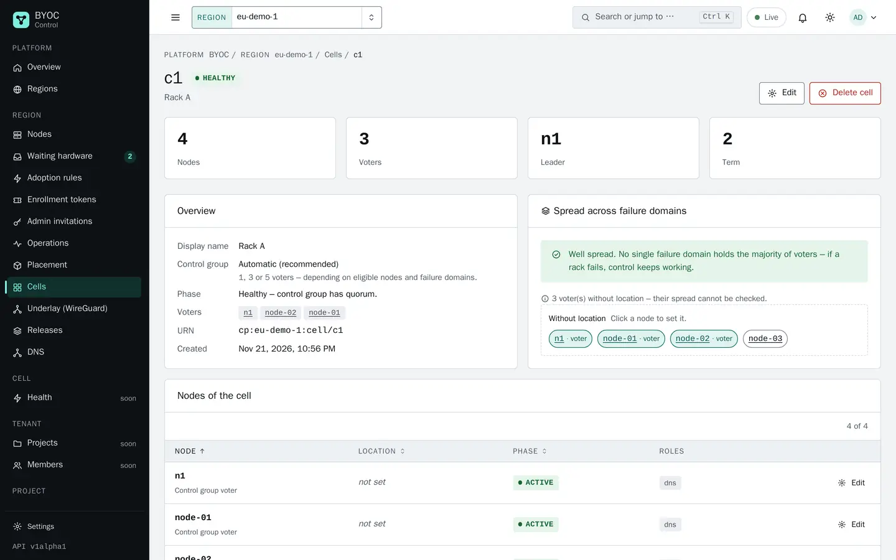
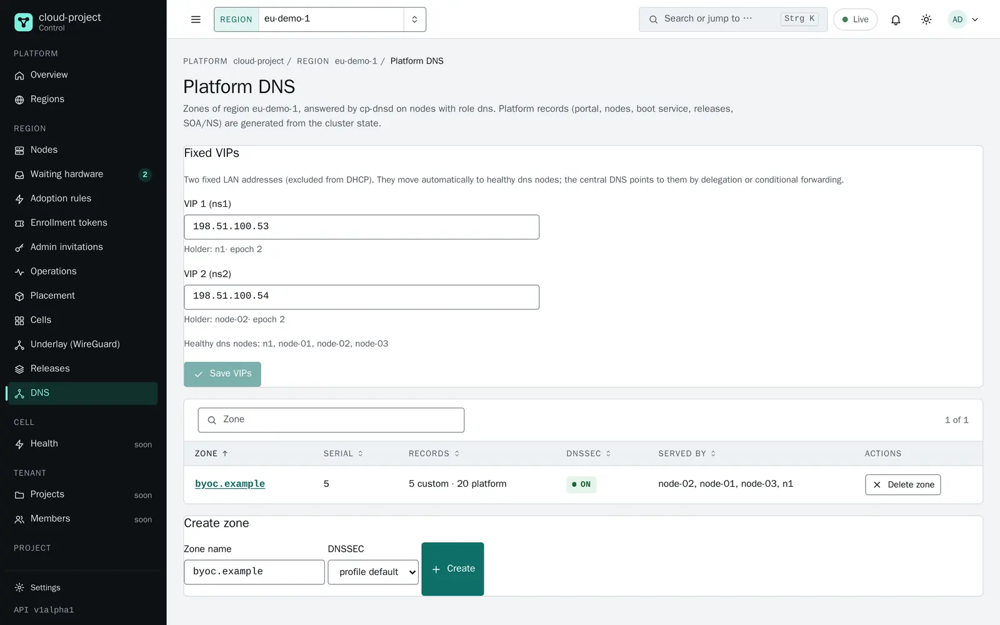
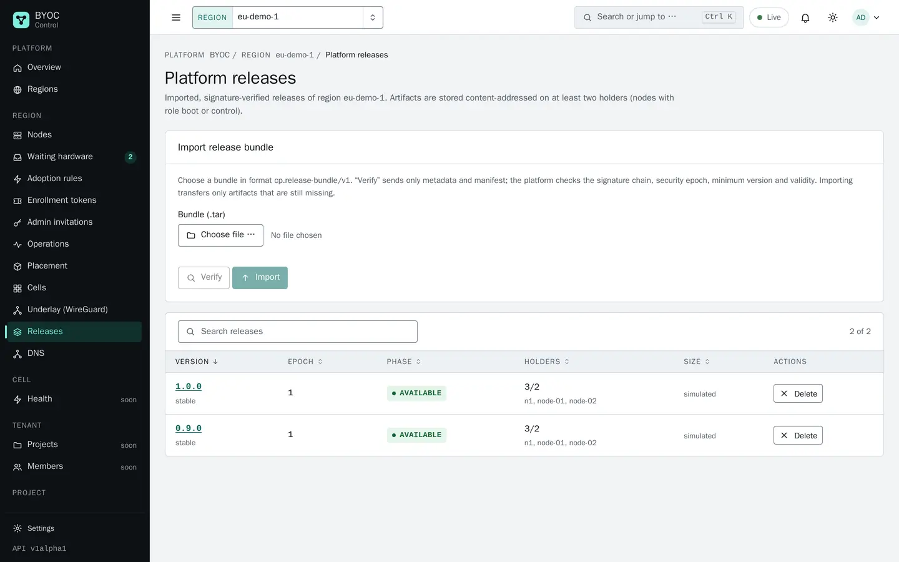
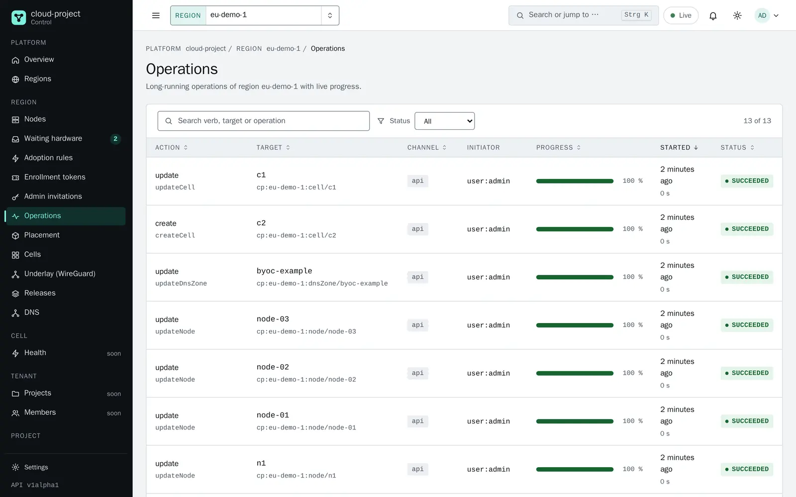

The web portal is one of three equivalent ways into the platform – alongside the REST API (with cpctl) and MCP. Every node serves it itself, no separate server is needed, and it follows the system's light/dark setting, just like this site. The screenshots come from a real multi-node lab: four nodes in containers, region eu-demo-1, portal address portal.byoc.example. All names, addresses and devices are fictitious.
Alpha – the interface may change. The screenshots show the state of development as of November 2026. Areas marked “soon” (tenants, projects, VMs, volumes, networks) follow in later phases.
Overview#
A region's state at a glance: active nodes, waiting hardware, running operations and the health of the cells. Values update live via the API's watch streams.

Waiting hardware#
Newly discovered devices wait in quarantine. What they report is untrusted content (“ext”) and is shown as text only; adoption requires confirming the device identity with a code, or happens automatically via an adoption rule.

Nodes#
All adopted nodes of the region with model, cell, location, roles, trust level and phase – filterable and sortable.

Node detail#
Identity, operating system state (A/B updates), location in the data center, roles and membership in the control group. Reinstall, replace and decommission are privileged actions that require confirmation.

Cells and control group#
A cell groups nodes with their own Raft control group. The view shows voters, leader and term and checks whether the voters are spread across failure zones so that losing one rack does not stop the control plane.

Platform DNS#
Zones of the region, answered by <code>cp-dnsd</code> on the nodes with the dns role, with fixed VIPs, DNSSEC and automatically generated platform records for the portal and the nodes.

Platform releases#
Signed release bundles are verified (signature chain, security epoch, minimum version) and stored content-addressed on several holders; nodes fetch their updates from there.

Operations#
Every change is a traceable operation with channel (API, portal, MCP, system), initiator, progress and result.

Setup wizard#
Initial setup runs in the browser: setup token and confirmation code from the first node's console, hardware and network checks, then platform, region, portal address and DNS. Before anything is executed, the wizard shows the complete plan.

More about the concepts behind these views: portal concept, features, architecture and the documentation.